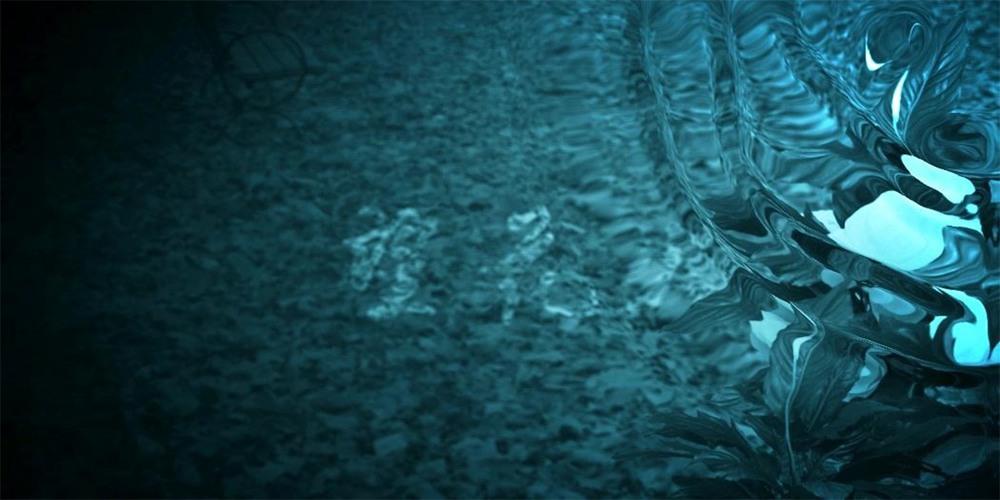
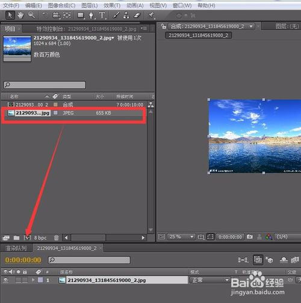
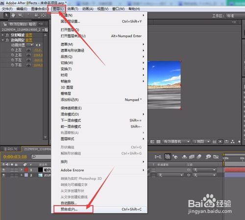
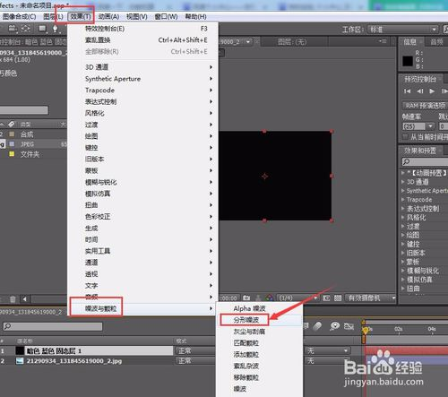
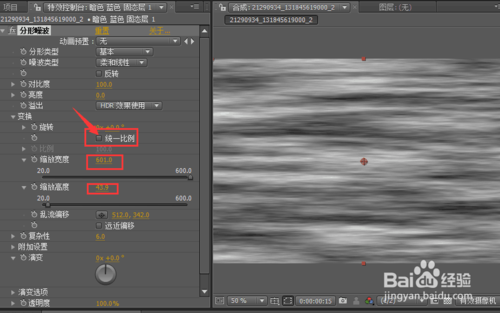
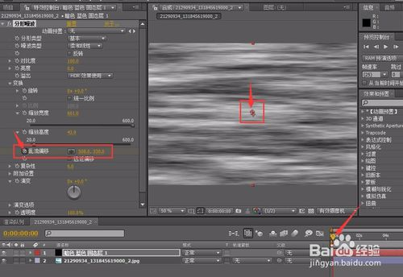
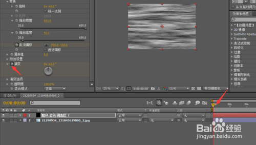
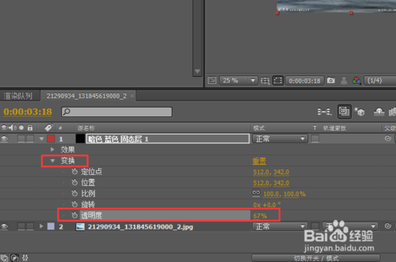
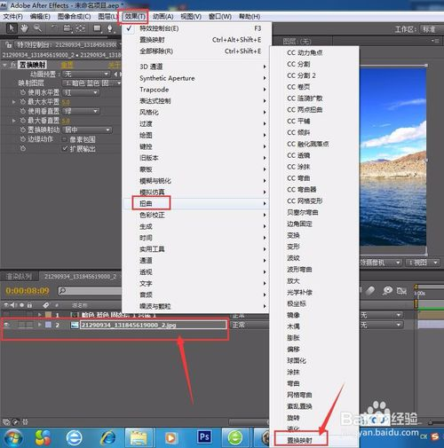
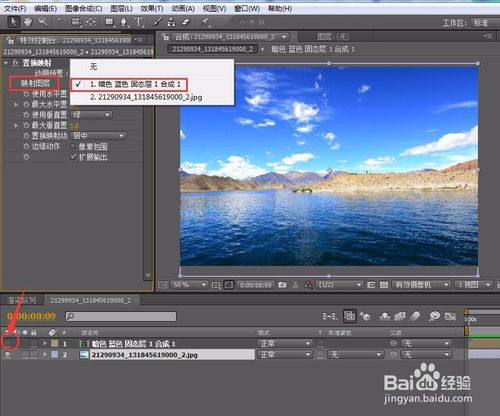

水波特效
Tip1:打开AE软件导入一张带有水的图片。鼠标左键按住图片拖到新建合成，将这张图片新建个合成。

Tip2:新建一个固态层，再给这个固态层添加一个分形燥波的效果。如图所示。


Tip3:在分形燥波里，点开变换属性，将同一比例的对勾去掉，再将缩放宽度调至600，将缩放高度调至40左右。

Tip4:将时间滑块拖至第一帧，将乱流偏移打上关键帧。中心点在窗口中间。然后再将时间轴拖至结束帧，将中心点拖至窗口底部。

Tip5:给演变第一帧打上关键帧，然后拖至结束帧调节属性3x180左右

Tip6:我们将固态层的透明度降低，方便调试。再添加个边角固定效果，分别将4个点拖至与水面对齐。下方的可一多向外托一些。如图所示。


Tip7:如果没有对齐可以直接用钢笔工具添加个遮罩，与边角固定效果差不多。好了我们将透明度调回不透明。
